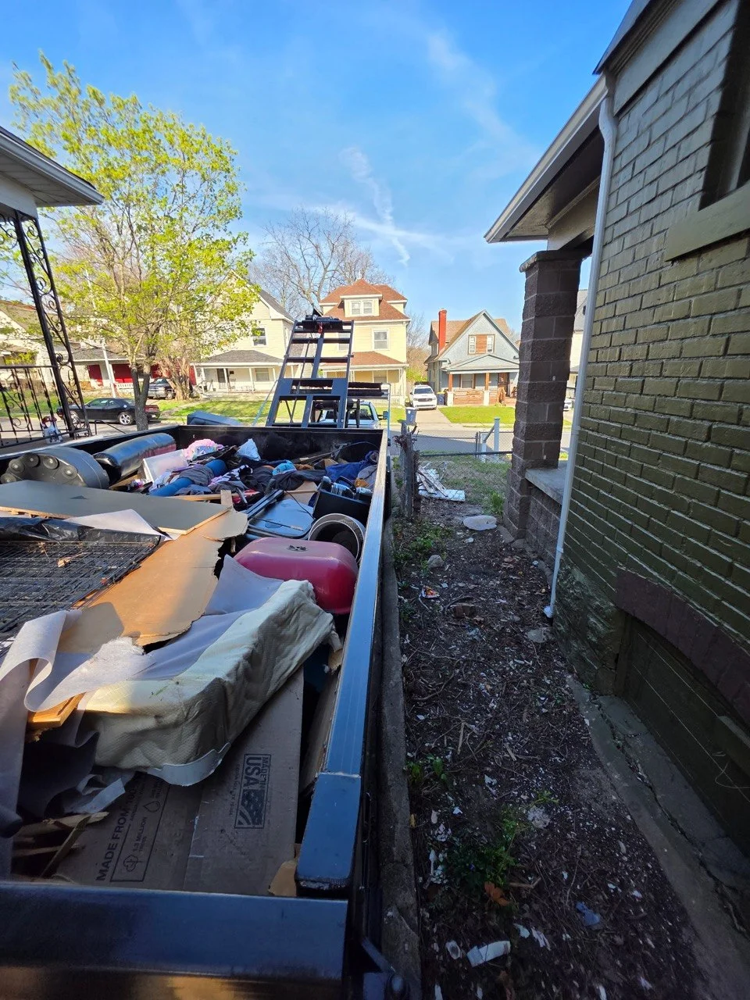

Loading Rules
What goes in, what doesn't, and how to fill it right.
Golden Rule: Do not fill above the top rail of the dumpster. Overfilled dumpsters cannot be legally transported and you'll need to remove the excess before pickup.
The Fill Line
Load Level with the Rim
This photo shows exactly what a correctly loaded dumpster looks like. Packed to the rim, level with the top rail. Notice the cardboard, mattress, household goods. Real cleanout debris, loaded smart.
The dumpster in this photo is full and ready for pickup. No items sticking above the sidewalls, nothing that would shift during transport.
Fill to the rim: level with or just at the top rail is perfect
Don't pile above the rim: debris that sticks up above the sidewalls is a transport safety violation
Break it down: furniture, boxes, and frames should be broken apart or flattened to maximize space

What Can Go In
Household Items
- Furniture (couches, chairs, tables)
- Mattresses and box springs
- Clothing and textiles
- Cardboard and paper
- General household junk
- Small appliances (non-Freon)
- Toys and sporting goods
Construction & Demo Debris
- Drywall / sheetrock
- Lumber and wood scraps
- Flooring (tile, hardwood, laminate)
- Cabinets and countertops
- Carpet and padding
- Siding and trim
- Windows and doors (glass removed)
Roofing & Exterior
- Asphalt shingles
- Roofing felt and underlayment
- Metal flashing
- Gutters and downspouts
- Fence material (wood, chain link)
- Deck boards and posts
Yard & Landscaping
- Brush, branches, and limbs
- Leaves and grass clippings
- Sod and landscaping material
- Small tree stumps
- Dirt and gravel (call first; heavy load fees may apply)
- Concrete and brick (call first; weight limits apply)
Commercial & Office
- Office furniture
- Shelving and racking
- Packaging and pallets
- General office cleanout debris
- Old signage and displays
Packing Tips
- Break down boxes and furniture
- Place flat/heavy items on bottom
- Fill gaps with smaller items
- Load from front to back evenly
- Keep the fill level at or below the rim
What Cannot Go In
These items require special disposal. We cannot haul them
Hazardous Materials
- Gasoline, oil, diesel, or fuel containers
- Paint (liquid. Dried latex is okay)
- Solvents, chemicals, and cleaning fluids
- Pesticides and herbicides
- Asbestos-containing materials
- Lead paint debris
- Medical or biohazard waste
- Flammable or explosive materials
Appliances & Electronics
- Refrigerators, freezers, air conditioners (Freon units)
- Televisions and monitors (CRT or flat)
- Computers and electronics
- Batteries (all types)
- Freon must be evacuated by a certified tech before any appliance can be accepted
Other Prohibited Items
- Tires
- Propane tanks (even empty)
- Railroad ties (treated lumber with creosote)
- Wet concrete (hardened concrete chunks are okay)
- Animal waste and carcasses
- Food waste or organic waste
Call First. Heavy or Bulky Materials
- Dirt, soil, and gravel (weight limits apply)
- Concrete, brick, and masonry (weight limits apply)
- Roofing tiles (heavier than standard shingles)
- Large tree stumps and root balls
Overage weight is billed at $75/ton above your included allowance. Heavy materials can add up fast. Call us and we'll advise on the best approach.
Not sure if something qualifies? Call before you toss it. We'd rather answer a quick question than have you deal with prohibited item fees at pickup.
contact us